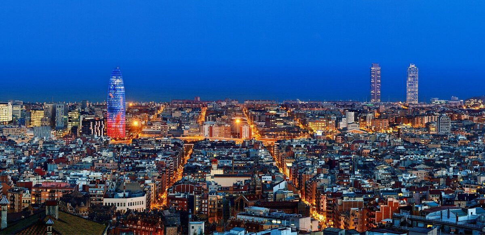

Barcelona: Modernismo y el Mar Mediterráneo

Barcelona es una ciudad cosmopolita conocida mundialmente por su arte, su arquitectura única y sus vibrantes playas. Es la capital de Cataluña y el hogar de las obras maestras del famoso arquitecto Antoni Gaudí.
Lugares imprescindibles que debes visitar:
- La Sagrada Familia: El monumento más visitado de España y la obra cumbre de Gaudí, aún en construcción.
- Park Güell: Un parque mágico con mosaicos coloridos y vistas impresionantes de toda la ciudad.
- El Barrio Gótico: Piérdete por sus calles medievales, llenas de historia, plazas ocultas y la Catedral de Barcelona.
- Las Ramblas y el Mercado de la Boquería: El paseo más famoso, lleno de vida, artistas callejeros y los mejores productos locales.
No te puedes ir de Barcelona sin pasear por la playa de la Barceloneta y disfrutar de la excelente gastronomía mediterránea frente al mar.